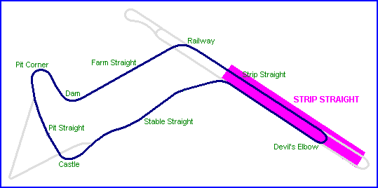
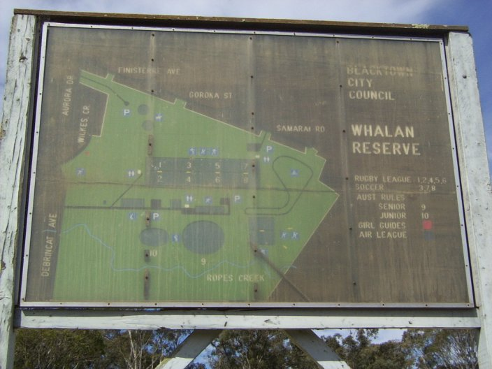

Mount Druitt - Australia
Type: Airfield Circuit
Length: 2.400 miles
The Mount Druitt circuit was built on the remnants of a second world war airstrip which was located to the west of Sydney. In 1950, the circuit was leased by Belfred Jones, and the venue became the host circuit of Australian Racing Drivers Club. The original variant, which was used during the years after the war, was gradually extended to a 2.4 mile configuration during 1951.
On the 31st of January 1954, the Mount Druitt circuit was the last venue to host a 24-hour race in Austalia for almost forty-nine years. The wet endurance race was won by Australia's Bill Pitt, Geordie Anderson and Charles Swinburne in a Jaguar XK120, and proved to be a car breaker as the track surface broke up during the event, with the resulting damage contributing to several retirements.
The circuit was closed spectacularly in 1958, when Belfred Jones cut a trench around the circuit using a mechanical digger, following a dispute between himself, the ARDC and the regulatory body. This action resulted in the circuit been unusable for racing, and sections of the trench can still be seen today.
Today, the circuit is all but completely unrecognisable. A suburb was built over the eastern section of the circuit in the 1960's and the airstrip section has since been converted into the Whalan Reserve sports complex, however a few sections of the circuit do remain if you know where to look.
|| Contents | Strip Straight | Farm Straight & Railway Corner | Stable Straight | Strip Return Curve || Home ||

Letters indicate the region where the photographs were taken. Click on map or links
above.

The Whalan Reserve sports complex map
Photographs kindly supplied by Conrad Zalewski. Reproduced here with kind permission.